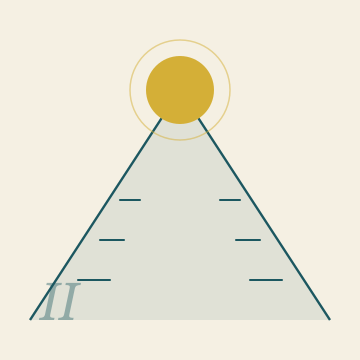

★ Dans cette édition
Neuf articles — une seule pensée
Neuf articles — partant du témoignage personnel, via le diagnostic polémique et l'analyse économique, vers la science, les fondations de Nova Democratia et l'application monétaire, se terminant par deux recommandations politiques concrètes. L'éducation est développée comme une trilogie en trois parties — diagnostic, prix et choix. Chaque article se tient seul — ensemble, ils forment une ligne continue. Pour la technique qui les sous-tend, voir le supplément Derrière les Chiffres.
Pourquoi je suis comme je suis
Sur le résultat à la fin, et les gens qui ne pensent qu'à demain. Un témoignage personnel en huit parties.

Votre thermostat est plus intelligent que votre ministre
On vole 20 000 euros. Le résoudre coûte 73 000. Sur l'État sans bande morte, et pourquoi cela nous détruit.

La logique climatique du NEPK
Pourquoi l'implosion économique néerlandaise va plus vite que prévu. Une analyse du point de bascule, calendrier à l'appui.

Retour à l'établi, en avant vers la pensée
Manifeste. Trois voies — savoir-faire, culture générale, formation classique préalable — pour redresser l'éducation néerlandaise.

Le prix de l'épanouissement
Ce que coûte le redressement de l'éducation néerlandaise — en argent, en confort et en récompense électorale. Et pourquoi l'attente coûte plus cher.

Choisissez un camp
L'épilogue. Ce que nous pouvons encore sauver, ce que nous ne pouvons plus sauver, et pourquoi vous devez vous exprimer maintenant.

Nova Democratia
Un nouveau modèle politico-étatique qui unit démocratie et efficacité. Pas un amendement, mais une autre fondation.

Sept Dimensions
D'un cadre théorique de physique vers des percées technologiques. Comment G, W et N élargissent le modèle standard — et ce que cela signifie pour l'informatique, la nanotechnologie et l'informatique quantique.

NEPK-FX
Prédiction neuronale des taux de change basée sur la formule NEPK. Avec des signaux de trading concrets à 12 et 24 mois — la preuve que le cadre fonctionne.

De Taxer à Attirer
Les Pays-Bas taxent ce qu'ils devraient garder. Un plan concret pour attirer capitaux, talents et entreprises au lieu de les chasser.

Résilience et Sélection
Pourquoi une société qui élimine toute friction sape sa propre force. Sur la logique biologique et économique de la sélection résiliente.